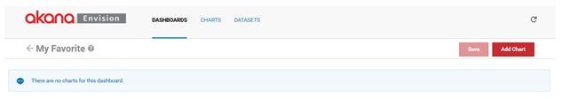

Learn how to add and reposition charts on an Envision Dashboard and display in Live Mode.
Envision Reference (Main Topic) Installing Envision 1.2
To present working Charts to Envision users those Charts need to be placed on a Dashboard.

You are then presented three lists of dashboards, My, Favorites, and Shared.
Select New Dashboard to start the process of creating a new dashboard. A pop-up displays where you can enter a name, a description, and designate how it will be shared.

A dashboard can be shared by other users.

To configure a dashboard select the name of the dashboard on the dashboard card. The dashboard configuration page displays.

Initially the dashboard is empty. To add a chart to the dashboard select Add Chart.

The Preview link will present a full page preview of the chart.

From the Preview page there is an Add to Dashboard button that you can select to add the chart to the dashboard immediately.
When returning to the dashboard page the charts are added but most likely may not be sized or positioned exactly as you want them.

A chart can be resized by grabbing its bottom right corner and dragging it to the desired size.

Charts can also be moved to different positions. To move a chart grab the title bar of the chart and drag it to the desired position on the dashboard.

In some situations you may want multiple charts of the same kind but with different filters on the data being displayed on the same dashboard.
For example, you can create a chart that displays a single merchant's number of orders over time but you want to show this for your two top merchants on a single dashboard.
To save effort, instead of having to create two different charts the same chart can be reused for both merchants on the same dashboard.
This is done by configuring default filters for charts relative to a dashboard they are displayed on. Once a chart with a filter is displayed on a dashboard you can select the Filter option from the options pulldown in the upper right hand corner of the chart.

This option will display the filters for the chart as they would on a completed functioning dashboard. You can change the value of the filters and the chart contents will be changed. In this example we'll change the Merchant name to Target in the second chart.

To see the changed filter take effect on the chart select the Update button. To save the new filter value for the next time the dashboard is displayed select the Save button.
Finally when the charts have been positioned and sized properly and the filter changes are made you can save the dashboard by selecting Save.
If the dashboard is saved as a favorite it will be listed in the Dashboards pulldown.
When you select the dashboard from the pulldown it is displayed in its live mode.

In Live mode the charts can no longer be repositioned or resized. However if a chart was configured to display filters to users the magnifying glass icon in the upper right corner of the chart can be selected to view those filters.

By changing the values in the filters and selecting Update the data charted will be changed.